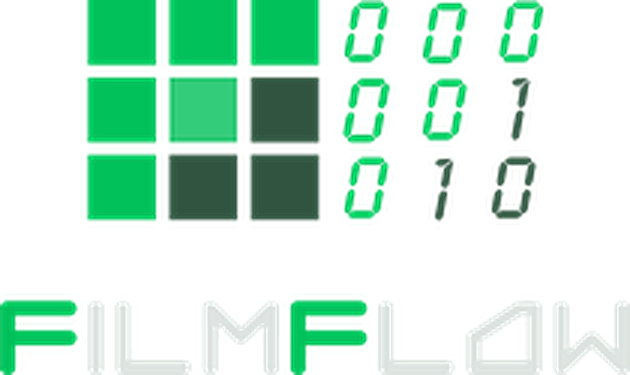

Estadístico FilmFlow
Lee los reportes de Silverstack y llena el estatus de tarjetas y el estadístico de tu proyecto, en el Mac y en el celular.
Última versión¿Mac con procesador Intel? Descarga esta versión · Compartir enlace · Guía en PDF
Instalar en tu Mac
Una sola vez. Después se actualiza con un clic.
- 1
Descarga e instala
Abre el archivo descargado Estadistico_FilmFlow.dmg y arrastra el ícono de la app a la carpeta Aplicaciones.
- 2
Permite abrirla (solo la primera vez)
Abre la app. Si el Mac la bloquea, ve a Configuración del Sistema → Privacidad y seguridad y pulsa «Abrir igualmente».
- 3
Inicia sesión
Pulsa «Iniciar sesión con Google» con tu cuenta de trabajo. Tus proyectos llegan solos.
- 4
Se actualiza sola
Cuando haya una versión nueva, la app te avisa. Pulsa «Actualizar ahora» y se vuelve a abrir en segundos.
¿Mi Mac es «chip Apple» o «Intel»?
Menú → Acerca de este Mac. Si dice Chip: Apple M… usa el botón verde. Si dice Procesador: Intel usa «Mac con procesador Intel».
Usar en tu iPhone o iPad
No se descarga de ninguna tienda: queda como una app en tu pantalla y se actualiza sola.
- 1
Abre el enlace en Safari
En tu iPhone abre filmflowestadistico.github.io en Safari, toca «Abrir la app» y luego el botón Compartir.
- 2
Agrégala a tu inicio
En el menú que aparece, toca «Agregar a inicio» y después «Agregar».
- 3
Ábrela desde el ícono
El ícono de FilmFlow queda en tu pantalla de inicio. Ábrela siempre desde ahí, como cualquier app.
- 4
Inicia sesión
Entra con tu cuenta de Google. Se actualiza sola cada vez que publicamos una versión nueva.
Android: abre el enlace en Chrome, toca el menú ⋮ → «Instalar app» (o «Agregar a la pantalla principal») y sigue desde el paso 3.